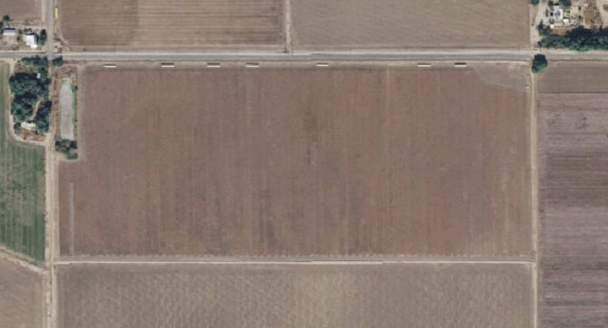

FarmOS
Sonoran demo plot
Simulated fleet · Marana, Arizona

Open the local guidance view
Start AgOpenWeb and the FarmOS demo relay on this laptop for live GPS guidance.
Open local demo ↗ SIM READY
Activity
Tractor updates and agent decisions
Ask FarmOS
Assign work or ask about the fleet